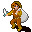

Troublemaker¶| Stat | Value |
|---|---|
| Class | humanoid |
| HP | 0 |
| Max AP | 10 |
| Attack cost | 10 |
| Move cost | 10 |
| Damage | 0 |
| Attack chance | 0 |
| Block chance | 0 |
| Damage resistance | 0 |
| Critical skill | 0 |
| Critical multiplier | 0 |
Shop stock¶
| Item | Chance | Qty |
|---|---|---|
| Firm leather armor | 100% | 1 |
| Leather armour | 100% | 1 |
| Superior hard leather armor | 100% | 1 |
| Blood-stained gloves | 100% | 1 |
| Bar brawler's gloves | 100% | 1 |
| Fine gloves of swift attack | 100% | 1 |
| Troublemaker's gloves | 100% | 1 |
| Coward's boots | 100% | 1 |
| Ring of vicious strike | 100% | 1 |
| Troublemaker's ring | 100% | 1 |
| Polished gem | 100% | 5 |
Found on¶
Quests¶
- Immaculate kidnapping: stages 45, 60, 70
- Thief apprentice: stages 15, 20, 60
- Wanted men: stages 45, 50, 55, 65, 80
- Placeholder for hidden quest stages (not displayed) (hidden flag): stages 60
- Thieves Hidden (hidden flag): stages 100, 110
Dialogue (58 lines)
What the dialogue says, exactly as in the game files. Lines are listed once; links jump to the line a choice leads to.
troublemaker_selector (silent check: the first matching branch below is taken)
- branch 1 (if latest stage of Thief apprentice is 60) → troublemaker_guild_13a
- branch 2 (if reached stage 20 of Thief apprentice; NOT reached stage 60 of Thief apprentice) → troublemaker_guild_10
- branch 3 → thievesguild_troublemaker_1
troublemaker_guild_13a Troublemaker: “Hi again, kid. What do you want?”
- “OK ... It's done. She's alright, and probably eating some bread now.” (if reached stage 65 of Immaculate kidnapping; NOT reached stage 70 of Immaculate kidnapping) → troublemaker_guild02_9
- “I've dealt with the lady.” (if latest stage of Immaculate kidnapping is 55; NOT reached stage 65 of Immaculate kidnapping) → troublemaker_guild02_8
- “I still have to take our guest to her quarters.” (if reached stage 45 of Immaculate kidnapping; NOT reached stage 55 of Immaculate kidnapping) → conversation ends
- “I have to ...(you look at Ambelie) find a better place for her.” (if reached stage 40 of Immaculate kidnapping; NOT reached stage 45 of Immaculate kidnapping) → troublemaker_guild02_1
- “[Lie] I just recovered 10,000 gold from my latest mission and was told to give it to The Guild.” (if latest stage of Wanted men is 40) → troublemaker_wm_10
- “I have found Defy and his men.” (if reached stage 50 of Wanted men; NOT reached stage 55 of Wanted men) → troublemaker_wm_report_5_alt
- “I'm confused. I gave Defy the fake key that you gave me, but what am I supposed to do now?” (if latest stage of Wanted men is 56) → troublemaker_wm_report_45
- “I have found Defy and his men.” (if reached stage 40 of Wanted men; NOT latest stage of Wanted men is 45; NOT reached stage 50 of Wanted men; NOT reached stage 60 of Wanted men; NOT reached stage 76 of Wanted men) → troublemaker_wm_report_5
- “[Lie] I have deposited the 10,000 gold. Here is your key back, as promised.” (if latest stage of Wanted men is 60; hand over 1× Aidem fake vault key) → troublemaker_wm_return_fake_key_10
- “I encountered Defy and his men and was forced to kill them!” (if latest stage of Wanted men is 76) → troublemaker_wm_deffy_killed_10
- “[Lie] I have deposited the 10,000 gold. Here is your key back, as promised.” (if latest stage of Wanted men is 77; hand over 1× Thieves' vault key) → troublemaker_wm_return_real_key_10
- “Can I take a look at the Guild's current supplies?” → shop opens
- “[Lie] I have deposited the 10,000 gold. Here is your key back, as promised.” (if reached stage 60 of Placeholder for hidden quest stages (not displayed) (hidden flag); NOT reached stage 80 of Wanted men) → troublemaker_wm_return_real_key_10
troublemaker_guild_10 Troublemaker: “How is the mission going?”
- “I've brought all the journals.” (if reached stage 55 of Thief apprentice; hand over 1× Dunla's Journal; hand over 1× Fanamor's Journal; hand over 1× Leta's Journal) → troublemaker_guild_11a
- “I have the journals, but one of your spies, Fanamor, was killed by a Feygard scout.” (if latest stage of Thief apprentice is 51; hand over 1× Dunla's Journal; hand over 1× Fanamor's Journal; hand over 1× Leta's Journal) → troublemaker_guild_11b
- “I gave you the journals, so where's my reward?” (if reached stage 100 of Thieves Hidden (hidden flag); NOT reached stage 110 of Thieves Hidden (hidden flag)) → troublemaker_guild_12a
- “Almost done.” → troublemaker_guild_11c
- “Well, but can I take a look at your supplies again?” → shop opens
thievesguild_troublemaker_1 Troublemaker: “Hello. Don't I recognize you from somewhere?”
- “No, I'm sure we have never met.” → thievesguild_troublemaker_3
- “What do you do around here?” → thievesguild_troublemaker_2
- “Can I take a look at what supplies you have available?” → shop opens
- “Umar sent me to talk about my first job here.” (if reached stage 10 of Thief apprentice) → troublemaker_guild_1
troublemaker_guild02_9 Troublemaker: “Excellent. From now on me and my fellows will take care of her.”
- “Very well. I will go and talk to Umar again. Bye.” → troublemaker_guild02_9_1
- “But ...” → troublemaker_guild02_10
troublemaker_guild02_8 Troublemaker: “Ah, yes ... that captive. Take this food and make sure she is comfortable enough. We don't want her starving right? (Troublemaker gives you some bread)” — effects: gives 5× Bread, sets stage 60 of Immaculate kidnapping
- “Argh. OK. What a tedious job!” → conversation ends
- “Understood.” → conversation ends
troublemaker_guild02_1 Troublemaker: “So do you want to kill her quietly?”
- “No, just I want a suitable place to leave her until ...” → troublemaker_guild02_2a
- “What? No, I am just asking you for a place for this type of job. Umar told me you knew of somewhere.” → troublemaker_guild02_2b
troublemaker_wm_10 Troublemaker: “Great! Give it to me and when I have time, whenever that may be, I will add it to our bank.”
- “Well, if you are so busy, I don't mind making the deposit for the greater good.” → troublemaker_wm_15
troublemaker_wm_report_5_alt Troublemaker: “Oh, yes. I was asking you what you said to Defy after learning that they wanted to hire you to rob us. Then you so rudely left the conversation. So I will ask you again. What did you say?”
- “Well, I agreed to, but only because I want to help you guys catch him.” → troublemaker_wm_report_20
troublemaker_wm_report_45 Troublemaker: “Seriously? Man, it is so hard to get good help nowadays! I instructed you to go with them to the vault as we may need your help there.”
- “Oh, yeah, I forgot.” → conversation ends
troublemaker_wm_report_5 Troublemaker: “You what? How? Where? Tell me all you know.”
- “I found them by pure luck, really.” → troublemaker_wm_report_10
troublemaker_wm_return_fake_key_10 Troublemaker: “Thank you very much!” — effects: sets stage 65 of Wanted men, removes monsters from aidem_base_2, spawns monsters on wild6_house, faction “factionCountThieves” set to -8, removes monsters from aidem_base_2
troublemaker_wm_deffy_killed_10 Troublemaker: “You what? How? Where? Tell me all you know.”
- “You're never going to believe this, but they were inside that vacant house when I walked in.” → troublemaker_wm_deffy_killed_20
troublemaker_wm_return_real_key_10 Troublemaker: “Thank you very much!” — effects: faction “factionCountThieves” set to -8, sets stage 60 of Placeholder for hidden quest stages (not displayed) (hidden flag)
- “I encountered Defy and his men and was forced to kill them!” → troublemaker_wm_deffy_killed_10
troublemaker_guild_11a Troublemaker: “Well done kid! You can now consider yourself skilled enough to be a part of this guild.” — effects: sets stage 100 of Thieves Hidden (hidden flag)
- “Thank you!” → troublemaker_guild_12a
- “Yes .... So where is my reward?” → troublemaker_guild_12a
troublemaker_guild_11b Troublemaker: “Well, that is the price of being one of us. There's always risk.” — effects: sets stage 100 of Thieves Hidden (hidden flag)
- Next → troublemaker_guild_12a
troublemaker_guild_12a Troublemaker: “You should talk with Umar. Maybe he has another task ... one that's more in your line of work, you know.” — effects: sets stage 60 of Thief apprentice, gives 900× Gold coins, sets stage 110 of Thieves Hidden (hidden flag)
- “Sure, I will talk to him.” → conversation ends
- “At least I got some gold. Bye!” → conversation ends
troublemaker_guild_11c Troublemaker: “Return to me when you are done.”
- “OK, I will.” → conversation ends
- “Can you tell me again what I'm supposed to do?” → troublemaker_guild_12b
thievesguild_troublemaker_3 Troublemaker: “No, I really recognize you.”
- “You must have me confused with someone else.” → thievesguild_troublemaker_4
- “Maybe you have me confused with my brother Andor.” → thievesguild_troublemaker_5
thievesguild_troublemaker_2 Troublemaker: “I keep an eye on our supplies for the guild.”
- “Can I take a look at what you have available?” → shop opens
troublemaker_guild_1 Troublemaker: “Argh, another annoying apprentice ... I mean, sorry. I know you were the one who brought us the key.”
- Next → troublemaker_guild_2
troublemaker_guild02_9_1 Troublemaker: “Do that.” — effects: sets stage 70 of Immaculate kidnapping
troublemaker_guild02_10 Troublemaker: “Hey, what are you waiting for? Leave me and go talk with Umar or something!” — effects: sets stage 70 of Immaculate kidnapping
- “You don't need to be rude! I will leave.” → conversation ends
- “I'll talk to him. Bye.” → conversation ends
troublemaker_guild02_2a Troublemaker: “Yeah, the ransom. I'm a veteran kid, don't forget that.”
- Next → troublemaker_guild02_3
troublemaker_guild02_2b Troublemaker: “Hmpf, be more specific next time. I'm not a mind-reader!”
- Next → troublemaker_guild02_3
troublemaker_wm_15 Troublemaker: “Hmm... well I guess you could do that for me considering Umar trusts you a lot.”
- “Great! Just tell me where to go and you can consider it done.” → troublemaker_wm_20
troublemaker_wm_report_20 Troublemaker: “Really? What did you say?” — effects: sets stage 50 of Wanted men
- “Well, I agreed to, but only because I want to help you guys catch him.” → troublemaker_wm_report_25
troublemaker_wm_report_10 Troublemaker: “Where did you find them?”
- “Southeast of Deebo's orchard. They were simply sitting in the woods around a campfire enjoying some of Sullengard's…” → troublemaker_wm_report_15
troublemaker_wm_deffy_killed_20 Troublemaker: “Then what happened?”
- “They looked up to no good, so I questioned them. Then the next thing I know, I'm caught up in the heat of battle and…” → troublemaker_wm_deffy_killed_30
troublemaker_guild_12b Troublemaker: “You have to retrieve information from our spies. The first one is a spy in Crossglen, Leta. I believe you know her. One of our veteran spies, Dunla, is disguised as a vendor in Vilegard Tavern. And finally we have Fanamor, watching what…”
- Next → troublemaker_guild_13b
thievesguild_troublemaker_4 Troublemaker: “Yes, might be.”
- “Have you seen my brother around here? He looks somewhat like me.” → thievesguild_troublemaker_5
thievesguild_troublemaker_5 Troublemaker: “Oh yes, now that you mention it. There was that kid running around here, asking a lot of questions.”
- “Do you know what he was looking for, or what he was doing?” → thievesguild_troublemaker_6
troublemaker_guild_2 Troublemaker: “OK, now listen up!”
- Next → troublemaker_guild_3
troublemaker_guild02_3 Troublemaker: “Well, I understand. Yes I have a place, but there's a problem. That place is at the other end of the town, next to the graveyard.”
- “I don't think that will present a major problem for me.” → troublemaker_guild02_4
- “I got here without any problem. Why I would have problems crossing through town?” → troublemaker_guild02_4
troublemaker_wm_20 Troublemaker: “Well, it's not that easy. You need more than the location. You need this key.” — effects: gives Thieves' vault key, sets stage 45 of Wanted men
- “Thanks, but where is the vault located?” → troublemaker_wm_25
troublemaker_wm_report_25 Troublemaker: “You know, $playername, for just being a young adventurer, you are learning a lot.”
- “Thanks a lot. I do feel a lot smarter now than I did before joining your guild.” → troublemaker_wm_report_30
troublemaker_wm_report_15 Troublemaker: “What else can you tell me?”
- “They wanted to hire me to rob you guys. Defy wants your stash of gold and treasures.” → troublemaker_wm_report_20
troublemaker_wm_deffy_killed_30 Troublemaker: “Can you prove this? Can you show me something that proves that all four are dead?”
- “Yes. I looted their rings. [Shows them to Troublemaker]” (if hand over 1× Defy's ring; hand over 1× Greedy's ring; hand over 1× Grabby's ring; hand over 1× Zachlanny ring) → troublemaker_wm_deffy_killed_40
- “Yes. I looted their rings, but I forgot to bring them with me. I'll come back.” → conversation ends
troublemaker_guild_13b Troublemaker: “And don't forget the password: You are no one. No one knows you. No one has seen you.”
- “Understood, bye.” → conversation ends
thievesguild_troublemaker_6 Troublemaker: “No. I don't know. I just manage the supplies.”
- “OK, thanks anyway. Goodbye.” → conversation ends
- “Bah, you're useless. Goodbye.” → conversation ends
troublemaker_guild_3 Troublemaker: “As I expect you are aware, we're not welcome in many places. In fact, we're being pursued by Fallhaven patrols. That's why we are here. This place is safe.”
- Next → troublemaker_guild_4
troublemaker_guild02_4 Troublemaker: “Well, anyway, I'm building a way underground to reach it without being seen. It will be ready next time, I promise.”
- “Whatever, anything more?” → troublemaker_guild02_5a
- “Thank you. I will go there.” → troublemaker_guild02_5b
troublemaker_wm_25 Troublemaker: “You can find the empty house just south of here. Enter it and you will find your way.”
- “Thank you so much! I will bring the key back as quick as possible.” → conversation ends
troublemaker_wm_report_30 Troublemaker: “Listen, kid. Let's use this to our advantage. Take this fake key, bring it to Defy and we will be waiting for them at the vault.” — effects: gives Fake Thieve's Guild vault key, sets stage 55 of Wanted men
- “Sir, that sounds like a great plan. What do you want me to do after handing him the fake key?” → troublemaker_wm_report_35
troublemaker_wm_deffy_killed_40 Troublemaker: “Well, this is great news indeed. However, we would like to have them alive.” — effects: sets stage 80 of Wanted men, faction “factionCountThieves” set to 3
troublemaker_guild_4 Troublemaker: “But we need supplies to survive, and also to maintain the Guild's influence. We are not just common robbers.”
- “What do you mean?” → troublemaker_guild_5
- “Please continue.” → troublemaker_guild_5
troublemaker_guild02_5a Troublemaker: “Yes, there is something.”
- Next → troublemaker_guild02_6
troublemaker_guild02_5b Troublemaker: “OK. Make sure you're not seen doing suspicious things!”
- Next → troublemaker_guild02_6
troublemaker_wm_report_35 Troublemaker: “You should go with them to the vault as we may need your help there.”
- “Great! Just tell me where to go and you can consider it done.” → troublemaker_wm_report_40
troublemaker_guild_5 Troublemaker: “We don't just steal gold or goods. We steal information. Secrets, shipment reports, strategic locations. Do you know what I mean?”
- “Get to the point please.” → troublemaker_guild_6
- “Yes, I understand.” → troublemaker_guild_6
troublemaker_guild02_6 Troublemaker: “I almost forgot. Take this key. Make sure you put it in correctly to open the hatchway.” — effects: gives 1× Guild brig key, sets stage 45 of Immaculate kidnapping
- “You forget many things, right?” → troublemaker_guild02_7
- “Hmm, OK. I will keep that in mind.” → conversation ends
troublemaker_wm_report_40 Troublemaker: “You can find the empty house just southwest of here. Enter it and you will find your way.”
- “I'll be there. Thank you.” → conversation ends
troublemaker_guild_6 Troublemaker: “We have spies and scouts in certain key locations, gathering information. These locations are places frequented by people from Feygard and also from Nor City.”
- Next → troublemaker_guild_7
troublemaker_guild02_7 Troublemaker: “I have better things to do than help an apprentice. Leave me. Hmpf.”
troublemaker_guild_7 Troublemaker: “So you will be the intermediary this time, collecting our spies' journals and bringing them to me.”
- “Sounds easy, I'll do it.” → troublemaker_guild_8a
- “That's not my favorite kind of job, but I will bring them.” → troublemaker_guild_8a
- “No, I'm too strong to be just a mere broker.” → troublemaker_guild_8b
troublemaker_guild_8a Troublemaker: “Good. We have three people on the job. The first one is a spy in Crossglen, Leta. I believe you know her. One of our veteran spies, Dunla, is disguised as a vendor in Vilegard Tavern. And finally we have Fanamor, watching what is…” — effects: sets stage 15 of Thief apprentice
- “Anything else?” → troublemaker_guild_9
- “OK, bye.” → troublemaker_guild_9
troublemaker_guild_8b Troublemaker: “Hmpf. Go kill some beetles with your strength!”
troublemaker_guild_9 Troublemaker: “Ah! I almost forgot. You have to say the password if you want them to give you the journal. The password is "You are no one. No one knows you. No one has seen you." Good luck.” — effects: sets stage 20 of Thief apprentice
- “I will keep that in mind. Bye.” → conversation ends
Community notes¶
Written by players, not generated from game data. Observations: what players notice in-game · Lore: the in-world story · Trivia: real-world facts, references, development history · Theory / speculation: unconfirmed ideas; may just be unfinished content
Observations¶
Nothing here yet. Know something? Add it.
Lore¶
Nothing here yet. Know something? Add it.
Trivia¶
Nothing here yet. Know something? Add it.
Theory / speculation¶
Nothing here yet. Know something? Add it.
Monster ID: troublemaker · Data from v0.8.18